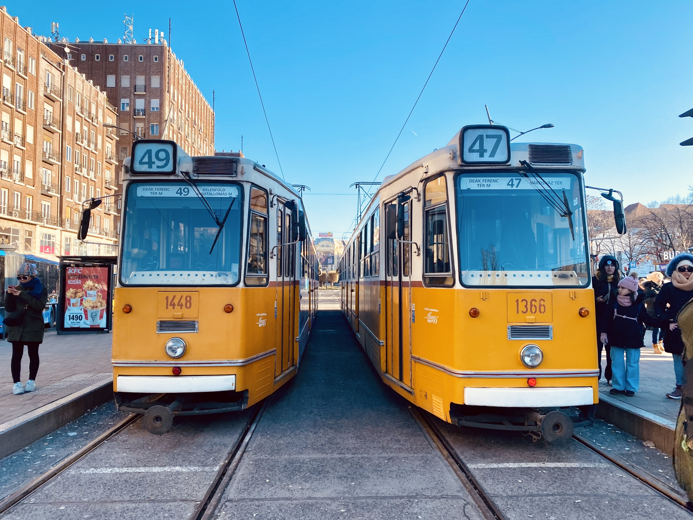

Nutta Sittirash (Nat)
About me
I recently earned a master’s degree in Transport and Geoinformation Technology from KTH Royal Institute of Technology in Stockholm, Sweden. My studies focused on solving real-world challenges in transport and urban mobility projects in Europe and some other countries.
I am particularly interested in transport and urban mobility, such as leveraging transport data analysis to assist traffic planners in decision-making processes related to urban mobility and land use. I am also passionate about managing disruptions in multimodal transport systems and enhancing service and operational design to better serve people. My ultimate goal is to promote sustainable cities with efficient public and road transport systems, and beyond.
I excel in project-based work, having collaborated with my peers during my time in Sweden on various projects (written below under School Project). My background in civil engineering has strengthened my skills in logical thinking, problem-solving, and technical expertise. Additionally, my work experience has helped me developed strong skills in cross-sector collaboration, designing methodologies, and effectively communicating solutions to stakeholders.
I am second to none, and I am willing to devote my time and skills to help create a more sustainable future for us now and for next generations.
Education
- 🇸🇪 2022-2024: KTH Royal Institute of Technology, Stockholm, Sweden
- M.Sc. in Transport and Geoinformation Technology
- 🇹🇠2012-2017: Rajamangala University of Technology Isaan, Khon Kaen, Thailand
- B.Eng. in Civil Engineering
- About work experience, please refer to my CV which can be downloaded here
News
- [Jan. 2025] I presented ‘A Smart-card Based Analysis of During and Post-Disruption Impacts on Public Transport Passengers’ Travel Pattern in Transport Research Board Annual Meeting 2025 at Walter E. Washington Convention Center
- [Nov. 2024] The paper is accepted for presentation at Transportforum 2025 in Linköping, Sweden
- [Oct. 2024] The paper is accepted for presentation at the 2025 Transport Research Board Annual Meeting in Washington, DC.
- [Aug. 2024] We submitted our paper to a conference, Transportforum 2025 by the Swedish National Road and Transport Research Institute (VTI).
- [Aug. 2024] My degree certificate was issued, and the degree project has been published on DiVa Portal.
- [Jul. 2024] We submitted our paper to Transport Research Board Annual Meeting 2025 (TRBAM25) for oral presentation.
- [Jun. 2024] I gave the final presentation of my degree project at the Transport Divison, KTH, with my examiner, supervisors, friends and family.
Projects
-
 TRBAM25
TRB Annual Meeting (TRBAM25), 2025.PDF To be presented in TRBAM25, Washington DC, in January 2025.
TRBAM25
TRB Annual Meeting (TRBAM25), 2025.PDF To be presented in TRBAM25, Washington DC, in January 2025. -
DiVa PortalKTH Royal Institute of Technology, 2024.PDF Project Page Degree Project
-
DiVa PortalKTH Royal Institute of Technology, 2024.PDF Project Page Page 12 and 13 in Degree Project
Skills
Python, Java, SQL, CSS, HTML ArcGIS, QGIS, RailSys, AutoCAD, AutoCADcilvil3D, SketchUp3D Overleaf, LaTex, Microsoft Project, Microsoft Offices:Excel, Power Point, Word Reinforced concrete design and drawing for hourses (USD/WSD) with a legitimate license in Thailand
School Projects
The Viability of the FINEST Link: Helsinki-Tallinn Railway Tunnel, a Cost Benefit Analysis project in Transport Policy and Evaluation The Predicted Arrival Time of The Next Bus, a machine-learning project in Applied AI in Transportation National Freight Transport Systems in Thailand, a national logistic project in Logistics and Transportation Stockholm Nord Proejct, a project about Stockholm Nord Intermodal Terminal in Logistics and Transportation Public Transport Modes and Actual Waiting Time on the Same Corridor, a public transport project in Public Transport Kvarkenbanan The Railway Fixed Link Between Umeå and Vaasa, an initiative railway project in Railway Traffic - Market and Planning Developing a software program, CorGIS, for visualizing geographical data, a software-developing project in GIS Architecture and Algorithms with three colleagues. Car-free Paris, a project in Sustainable Urban Mobility. Cold-Chain and A Small Retailer, a project in Purchasing & Supply Chain Management
My Travels in Europe
-
-
-
-

Powered by Jekyll and Minimal Light theme.